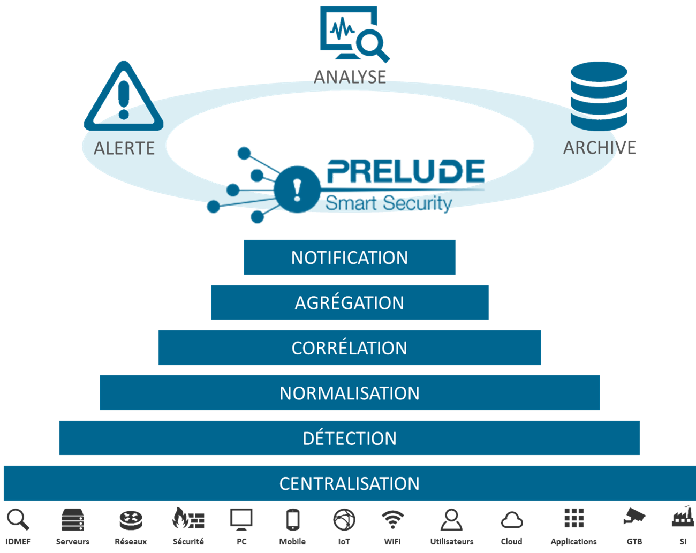
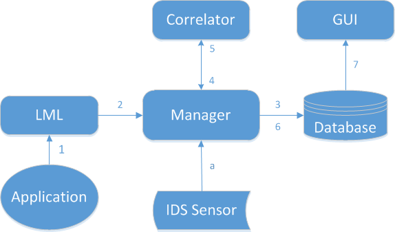

PUBLICATION HISTORY
| Version | Date | Modification |
|---|---|---|
| V 5.1 | 13/09/2019 | Updates to take changes in Prelude 5.1 into account |
| V 5.0 | 07/09/2018 | Updates to take changes in Prelude 5.0 into account |
| V 4.1 | 21/07/2017 | Updates to take changes in Prelude 4.1 into account |
| V 4.0 | 27/02/2017 | Updates to take changes in Prelude 4.0 into account |
| V 3.1 | 14/09/2016 | Updates to take changes in Prelude 3.1 into account |
| V 3.0 | 20/05/2016 | Updates to take changes in Prelude 3.0 into account |
| V 2.1 | 21/08/2015 | Updates to take changes in Prelude 2.1 into account |
| V 2.0 | 20/10/2014 | Initial version |
Introduction¶
Scope of this document¶
This document is applicable to:
- Prelude SIEM version 5.2;
- Operating systems:
- CentOS/Redhat version 7 (64 bits).
Audience for this document¶
This document is mainly dedicated to the following teams:
- The Prelude SIEM integration team;
- The Prelude SIEM support and deployment team;
- The Prelude SIEM administration team;
- Prelude SIEM users.
References¶
Reference documents are:
- Prelude SIEM: https://www.prelude-siem.com
- Operating systems:
- CentOS/Redhat: https://www.centos.org
Prelude SIEM: The security monitoring¶
Prelude SIEM is an open-source security monitoring solution. Its objective is to centralize all security events of an information system and to offer a homogeneous vision to the operators. Prelude SIEM collects, normalizes, sorts, aggregates, correlates and reports all security-related events independently of the product brand or license giving rise to such events.
{kind=link}
Figure: Features of Prelude SIEM
Prelude SIEM presents a specificity almost unique in the SIEM community: it implements the IDMEF format. This format is defined in an RFC since 2007 at the IETF and allows homogenizing the way a security alert is presented. Through the use of this format and its interconnection library, it is easy to make other tools communicate with Prelude SIEM. Beyond its capacity to analyze any type of log (system logs, log streams, flat files, etc.), Prelude SIEM also benefits from a native support with a number of HIDS and NIDS sensors; with the best known being Snort, Samhain, OSSEC and Suricata.
Prelude SIEM is available in three versions:
- Prelude OSS: Free, public and open-source version, released under GPL V2 license. Prelude OSS implements the event management part of Prelude (SEM). Since version 5.2, Prelude OSS also makes it possible to store, display and analyze raw security information (SIM). This version is intended for small parks of limited size (<10 machines), students, research organizations, as well as for testing by users interested in acquiring Prelude SIEM. The performance of Prelude OSS is highly limited by the volume of data analyzed.
- Prelude SIEM: Professional version based on the open-source version Prelude OSS and that greatly enhances its performance. Prelude SIEM offers many additional features (ticket management, dynamic statistics, geolocation, archiving, etc.) and capabilities to be deployed and operated easily and efficiently on complex and large-scaled parks of machines.
- Prelude SOC: Fully scaled version, mainly for Security Operational Center (SOC) usage. Necessary modules for an operational security center, in addition to Prelude SIEM, are: Prelude MAP (network topological representation), Prelude CTI (Cyber Threat Intelligence) and Prelude NOC (performance and availability monitoring).
The Prelude SIEM modules¶
The following figure shows how Prelude SIEM’s modules communicate together:
{kind=link}
Figure: Event tracking between Prelude SIEM modules
The path of an event between the different Prelude SIEM modules is as follows:
- The application generates a log and sends it to Prelude LML (either under file form or through a Syslog connection);
- The log is analyzed by Prelude LML (thanks to its set of rules). If this log is considered suspicious, Prelude LML creates an IDMEF alert and sends it to its manager (Prelude Manager that can be chained to another Prelude Manager instance);
- Prelude Manager performs the filters and treatments that are configured and then inserts the event into the database;
- Prelude Correlator receives the alerts from Prelude Manager;
- If several raw alerts match a correlation scenario, a correlation alert is generated and sent to Prelude Manager;
- Prelude Manager also writes correlation alerts into the database;
- Prelude GUI connects to the database via LibPreludeDB in order to read information and sends it to a browser.
In parallel, Prelude Manager can receive alerts from other sources:
- A third-party intrusion detection sensor sends its alerts to Prelude Manager (e.g. OSSEC, Samhain, Suricata, etc).
The Prelude SIEM graphical interface¶
The graphical interface of Prelude SIEM is called Prelude GUI in all documents.
The GUI architecture has been reworked in Prelude SIEM to offer a flexible application. Prelude SIEM is completely modular and uses the latest Web technologies. The current interface is composed of a core module and many additional plugins that can be managed from this same interface.
Commercial plugins are available in the SIEM version. They provide a lot of additional features like:
- Entity management;
- Advanced ticket system;
- Graphical fully interactive statistics;
- Reporting and compliance;
- Forensic / Behavioral charts;
- Rules creation through wizard (log analysis rules and correlation rules);
- Ability to create virtual views;
- Secured authentication using an LDAP server or SSO.
When Prelude SIEM receives information, it executes two actions: storage into the NoSQL database for raw data and forensic, normalization and storage using the IDMEF format into the real-time database. Prelude GUI connects to these databases and retrieves alerts and logs details in order to display them. These details are available instantly or updated periodically and automatically. The refresh period is configurable.
The interface interacts with the following databases:
- The GUI database used to save configuration options, created rules etc.
- The IDMEF database from where alerts and agents details are retrieved;
- NoSQL database where raw datas (logs, etc.) are stored.
Authentication¶
Prelude GUI is a lightweight application accessible using a Web browser. Refer to the Prelude SIEM installation guide for the access procedure according to the HTTP server used. The first step to access the GUI is authenticating to https://IP-of-your-Prelude-SIEM/.
You must enter the login and password depending on options specified in the Prelude GUI configuration file (/etc/prewikka/conf.d/auth.conf).
By default, the local authentication mode is selected.
Note
Default administrator login and password are specified using the initial_admin_user and initial_admin_pass options. These options can be changed in the [auth] section of the /etc/prewikka/conf.d/auth.conf configuration file.
The default administrator credentials are the following:
- Login: admin;
- Password: admin.
Note
It is possible to skip this authentication phase in the configuration file. To do this, refer to the Configuration Guide.
Once authenticated, a listing of detected threats appears.
This interface presents several sections:
- Navigation menu;
- Risk overview;
- Control menu;
- Tabs;
- Page content.
The rest of the documentation describes these interfaces more precisely.
Risk overview¶
The risk overview presents indicators allowing operators to have a first idea of their information system security state. Those indicators are refreshed every 30 seconds. The values can vary depending on the control menu.
The following indicators are available:
- Agents: Number of online agents and monitoring status of agents (green / red);
- Archive: Number of logs;
- Alerts: Number of alerts for each severity level.
The displaying of indicators depends on active Apps. For instance, log indicators can’t be shown if the Logs app is not installed or up-to-date.
Tabs¶
Below the navigation menu are the tabs. These tabs are menu sub-elements.
The operator can customize tabs by reordering them inside the /etc/prewikka/menu.yml configuration file.
Page contents¶
The page contents is the rest of the available space in the interface. It is used to display the contents of the currently viewed page. It is also here that floating windows appear if necessary.
Tables for processing and analysis¶
In Prelude GUI, when searching through different data types, the software always presents the same type of table. This table is generic and adaptable. It is presented under two forms: the first one allows for data search and analysis, the other is used for aggregated searches on this data in order to offer a synthetic view.
Search tab¶
The search tab allows operators to find particular data by making specific searches.
View parameters
The parameters of this page are the following:
- Graph type: Allows to select the type of graph used when aggregation is enabled. By default, this option is Bar.
- Action mode: If this box is checked, checkboxes are added to the table in order to select one or more data rows and execute a specific action at .the bottom right of the table.
- Condensed mode: If this box is checked, data are displayed on one line (can be simpler in some use cases). If data are longer than the cell, they are truncated.
- Expert mode (only in Alerts and Heartbeats): If the option is checked, additional information are available in each of the columns. The interface is a bit less readable due to the amount of data but more efficient for an advanced user.
Search bar
The search bar can operate according to two syntaxes:
- Lucene search: key:value based syntax used by most search engines.
- Criterion search: Prelude SIEM specific and boolean-oriented syntax.
Note
The control menu is taken into account when searching.
Typing in the search bar will open a completion menu. It displays the searchable fields as well as the user’s search history.
Search examples in Lucene mode:
- “login” searches data containing the “login” keyword;
- “login failed” searches data containing the “login” keyword and the “failed” keyword;
- “login OR failed” searches data containing the “login” keyword or the “failed” keyword;
- “host:localhost” searches data whose host field is “localhost”;
- “-program:sudo” searches data whose program field is not “sudo”.
Search results
The search results are represented as a chart followed by a table. These elements contain all data matching the query typed in the search bar. The chart is configurable in the view parameters.
Note
On the page dedicated to logs, and when the Lucene mode is selected, the elements searched by the user and found in the data are highlighted in the table.
The columns of the table can be removed/added/ordered by clicking on the cog button in the bottom left corner of the table.
The columns can be sorted, by clicking on the column header. After a first click, data are sorted by ascending order. Successive clicks are used to alternate between the following states:
- Sort by ascending order;
- Sort by descending order;
- No sort.
Note
It is also possible to sort on several columns simultaneously.
Actions can be performed from the table. By clicking on data in the different columns, a contextual menu appears with the following sections:
- Search: allows simple manipulations on the search bar with the following possibilities:
- Add to search: add the selected value in the search bar and perform the query automatically. The current page is updated with the new results;
- Exclude from search: add the selected value in the search bar and force the absence of the value in the results;
- New search: create a new query with only the selected value as filter;
- Group by …: allows grouping data automatically by the selected field and displays the data repartition as a chart;
- Actions: allows to execute actions from the selected data. For instance the execution of a system command with an IP address as argument. The available actions are specific to each data type.
- Informations: allows to get more detailed information about the selected column without the need to access the full data.
By clicking on the + symbol at the left of each table row, the whole metadata of the row appear. Buttons give a quick access to the following actions:
- Click on the metadata name: triggers the grouping by this field;
- Click on the magnifying glass with “+”: triggers the addition of the data to the search;
- Click on the magnifying glass with “-“: triggers the exclusion of the data in the search;
A pagination mechanism is available at the bottom of the table. It allows users to navigate through the different pages:
- <<: Access to the first page;
- <: Access to the previous page;
- Page … of …: Direct access to the given page;
- >: Access to the next page;
- >>: Access to the last page;
- dropdown list: Choose the number of entries displayed per page.
The number of results and the position of the displayed entries among these results are displayed at the bottom right of the table.
Aggregation tab¶
The aggregation tab allows operators to regroup data according to certain metadata determined by the user.
The page contains:
- A search bar to apply filters on displayed data.
- An aggregation bar to group by the wished metadata. It is possible to aggregate by several metadata:
- A time unit: minute, hour, day, month or year;
- Every field associated to the data type.
- A table presenting the results of the aggregation with as many columns as grouping fields, as well as a column indicating the number of corresponding data.
- A chart representing the same results as the table.
It is possible to click on a table value or a chart entry to visualize the corresponding data unitarily.
It is possible to change the chart type and the maximal number of hosts to display by using the view parameters:
- Chart type: The type of representation to use (line, bar, radar, pie, …)
- Limit: Number of hosts to display.
Glossary and abbreviations¶
Glossary¶
List of terms used by Prelude SIEM. Several terms derive from the IDMEF standard.
- Agent
- A software or equipment using the Libprelude able to directly generate IDMEF alerts and heartbeats. It can be an analyzer or a manager.
- Alert
A data structure describing a security incident technically. It contains information about:
- Its classification;
- The sensor from which it originates;
- The time of detection/creation;
- Its source and its target;
- Its assessment (impact of the event).
It can be a simple alert or the grouping of related alerts into a “correlated alert”.
- Analyzer / Sensor
The emission source of an alert message.
This definition can be extended to cover not only Prelude agents (Prelude LML, Prelude Correlator, Snort, Samhain, etc.) but also services (web server, PAM, ssh, antivirus, etc.) that write in logs instead of emitting alerts.
- Path
In Prelude SIEM, the paths correspond to a simple syntax that can be used to reference the value of a field in a data structure (IDMEF alert, log entry, incident ticket, etc.). With this mechanism you can update or retrieve the value the path points to.
In particular, all classes and attributes defined in the IDMEF can be converted to paths usable by Prelude SIEM. For instance, the path
alert.classification.textcan be used to reference thetextattribute of theClassificationIDMEF class, the latter being an aggregated class of theAlertIDMEF class.- Ruleset
- A ruleset is a file containing a set of rules related to the same functional field (software, equipment, etc.).
- Libprelude
- Libprelude is a programming library that guarantees secure connections between Prelude analyzers (Prelude LML, Prelude Correlator, Snort, etc.) and the Prelude Manager. Libprelude provides an API for communication with Prelude sub-systems. It supplies the necessary functionality for generating and emitting IDMEF alerts and automates the saving and re-transmission of data in times of temporary interruption of one of the system’s components.
- LibpreludeDB
- The libpreludeDB programming library provides an abstraction layer upon the type and the format of the database used to store IDMEF alerts. It allows developers to use the Prelude SIEM database easily and efficiently without worrying about its type or storage format.
- Location
The physical site of one or several nodes.
Example: Paris
- Node
An equipment that hosts one or several analyzers/managers, identified by a network address or a name.
Example: 192.168.2.1
- Prelude Correlator
- Prelude Correlator allows conducting multi-stream correlation thanks to a powerful programming language for writing correlation rules. It has the ability to connect and fetch alerts from a remote Prelude Manager, and correlate incoming alerts based on the provided ruleset. Upon successful correlation, IDMEF correlation alerts are raised.
- Prelude GUI
- Prelude GUI is the official graphical user interface for Prelude SIEM exploitation. Providing numerous features, it facilitates the work of operators and analysts, and also provides access to external tools.
- Prelude LML
- Prelude LML is a log analyzer allowing Prelude SIEM to collect and analyze information from all kinds of sources (applications or appliances) emitting logs or syslog messages, in order to detect suspicious activities and normalize them to IDMEF format.
- Prelude Manager
Prelude Manager is the heart of Prelude SIEM and is generally called manager. It concentrates all IDMEF messages from agents, be it alerts or heartbeats.
The manager processes the received data in real time by inserting them for example into a database. It can also act as a relay, i.e. forward the messages to another manager. It is also responsible of transmitting alerts to the correlator.
- Heartbeat
A message sent in at regular intervals by agents to their attributed managers, in order to indicate their status (starting, running, stopping, etc).
The lack of some number of consecutive heartbeats indicates a failure of either the agent or its network connection.
- Syslog
- In computing, Syslog is a standard for message logging. It allows separation of the software that generates messages, the system that stores them, and the software that reports and analyzes them.
Abbreviations¶
| Abbreviations | Description |
|---|---|
| API | pplication Programming Interface |
| HIDS | Host Intrusion Detection System |
| IDMEF | Intrusion Detection Message Exchange Format |
| IDS | Intrusion Detection System |
| IHM | Interface Human to Machin |
| LML | Log Monitoring Lackey |
| N/A | Not applicable |
| NIDS | Network Intrusion Detection System |
| PCRE | Perl Compatible Regular Expression |
| SIEM | Security Information & Event Management |
| SOC | Security Operations Center |
| TLS | Transport Layer Security |
Annex: Criteria and paths¶
IDMEF criteria¶
Filter creation with IDMEF criteria¶
IDMEF criteria are filters on IDMEF fields. Several Prelude SIEM components use IDMEF criteria:
- Prelude Manager is distributed with the
idmef-criteriaplugin, which can be installed and used with IDMEF criteria. It is possible to define specific actions to be executed based on an incoming event (relaying, storage in a specific database, etc.). - Prelude GUI allows the user to define criteria in order to filter the results of a search or an analysis.
IDMEF criteria syntax¶
<IDMEF Path> <operator> <value>
Simple example:
alert.analyzer(-1).name = 'MySensor'
AND and OR operators can be used:
alert.analyzer(-1).name = 'My Sensor' && ('alert.assessment.impact.severity
= 'high' || alert.assessment.impact.completion = 'succeeded')
IDMEF paths¶
In Prelude SIEM, an IDMEF path is a pointer to a specific value in an IDMEF message.
Using this pointer, you can update or retrieve the value pointed by that path.
Any class specified in the IDMEF RFC can be converted to an IDMEF path.
Mapping an IDMEF class to an IDMEF path¶
When mapping an IDMEF class to a IDMEF path, you should obey the following rules:
- IDMEF paths must be written in lowercase;
- Subsequent elements of an access path must be separated using dots
.; - Wherever the IDMEF class uses uppercase letters for word separation, Prelude SIEM uses an underscore
_; - In case a path element is a list, you can use a specific index between brackets to access the element, for example:
alert.source(0).node.name.
Indexed elements¶
When accessing a list (e.g.: alert.source, alert.additional_data, etc.), the index must be specified as a number. When retrieving a value, the specified index must exist in the list.
In the context of an assignment, the first unassigned index of the list can also be used. For example, if alert.source(0) and alert.source(1) are defined, you may use either 0, 1, or 2 as the index to assign data, but not 3.
Note
You may also use negative indexes (-1, -2, -n, …) to access elements starting from the end of the list.
In this case, -1 points to the last element of the list, -2 to the penultimate, etc.
Note
Additionally, in the context of an assignment, you might use the >> (append) or << (prepend) operators.
alert.source(>>).interface = eth1
alert.source(-1).node.name = myNode
The example above appends a new source object to the alert.source list, by setting the value of the interface attribute to eth1. It then sets the node.name attribute of this new entry to myNode.
IDMEF operators¶
The following table presents the list of operators used in IDMEF criteria:
| Operator | Description |
|---|---|
| = | Equal |
| =* | Case-insensitive equal |
| != | Not equal |
| !=* | Case-insensitive not equal |
| ~ | Regular expression |
| ~* | Case-insensitive regular expression |
| !~ | Non-matching regular expression |
| !~* | Case-insensitive non-matching regular expression |
| < | Lesser than |
| <= | Lesser or equal than |
| > | Greater than |
| >= | Greater or equal than |
| <> | Substring |
| <>* | Case-insensitive substring |
| !<> | Non-present substring |
| !<>* | Case-insensitive non-present substring |
Default paths¶
Each type of data handled by Prelude SIEM uses default fields. These fields help simplifying access to metadata for the operator.
Alerts¶
| Simplified field | Actual path |
|---|---|
| Classification | alert.classification.text |
| Source IP address | alert.source.node.address.address |
| Source port | alert.source.service.port |
| Target IP address | alert.target.node.address.address |
| Target port | alert.target.service.port |
| Analyzer name | alert.analyzer.name |